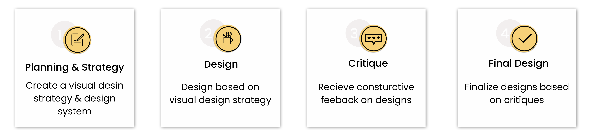
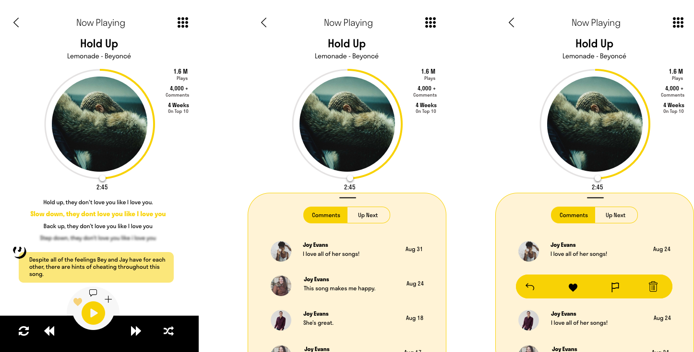

Choose a product or service and create a new visual design strategy and design language.
The Process

Planning & Strategy
Visual Design Strategy
My first step was to understand the mission statement of Genius which would help guide the development of the design strategy.
I pulled two main themes from their mission statement: “powered by community”, which I wanted to facilitate through a clean interface
that fosters collaboration and “stories behind the music matter most”, which to me meant it was important to create a design that puts an
emphasis on the lyrics and the story behind the lyrics to bring the fans closer to the artists.
Design Language
I translated my strategy into a mood board that would inspire my visual designs and decided to stick with the current color palette.
Design
Sketching
I went through numerous rounds of sketching and came to my final set of ideas (pictured above).
Critique
I presented my first round of designs in class and got critiques about playing it too safe with my choice of typeface and with the design itself.
I went back with those comments in mind and tried to veer away from designing similar experiences I currently see in my everyday life.
Final Designs
Screens
Home
On the Genius app, the home screen is where the stories are. I wanted the home screen to make a statement with large images of the headlining artist
with a scrolling bar at the bottom with more articles about that same artist.
Artist
Genius helps the listener learn more about the story behind the music and what better way than to show the story of the artist? Here, the user can
select an artist to see their discography, as well as learn more about the artist’s story.
Music
One aspect I believed was missing from the Genius app was their own music player. I created an experience that shows the lyrics as the song plays,
showing the annotations of the lyrics. Additionally, I included a section for listeners to interact with each other to facilitate the feel of community that is inherit in Genius’ current experience.

Lessons Learned
I learned so much in my first visual design studio. This project showed me just how important it is to be able to receive and apply critique as well as iterate on designs.
Both are essential to a good design process and something that I have come to appreciate.